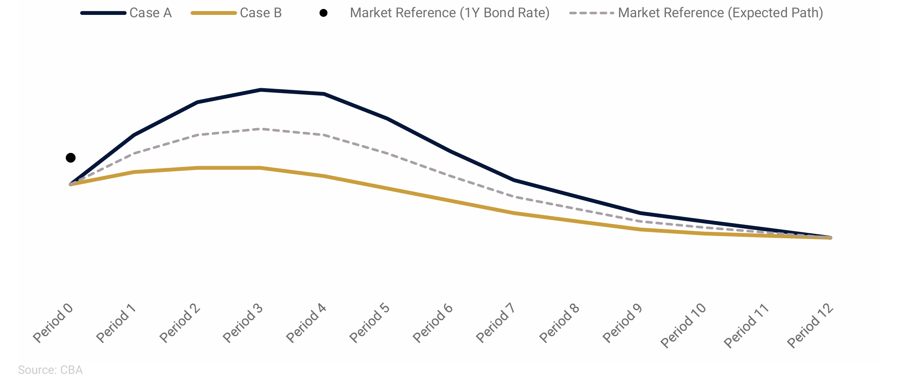

ENDOCRED Model Simulations
ENDOCRED (Endogenous Credibility) is a macroeconomic modeling framework that explicitly incorporates credibility dynamics into monetary policy decisions. It is widely used at central banks around the world, and in particulat, at the central banks that adopted prudent risk-management approach to monetary policy (FPAS MARK II) for forecasting and policy analysis.
Brief Introduction to ENDOCRED
Why ENDOCRED?
- Traditional FPAS models assume fixed policy credibility, often unrealistic during uncertain periods.
- ENDOCRED addresses this by allowing public trust in the central bank to evolve endogenously over time.
- It is especially relevant in contexts like post-pandemic inflation, where expectations, communication, and policy strength interact nonlinearly.
Key Features of the ENDOCRED Framework
- Endogenous Credibility Process: Expectations react dynamically to how well the central bank achieves its objectives.
- Two Inflation Regimes:
- A credible regime (expectations anchored at 2%)
- A high-inflation regime (persistent, drifting expectations)
- Nonlinear Phillips Curve: The effect of output gaps on inflation intensifies in high-pressure economies.
- Loss Function Approach: The model minimizes a central bank’s loss function instead of assuming a fixed interest rate rule.
- DynareJulia Implementation: Fully implemented in open-source tools for fast policy simulation and transparency.
Policy Simulations and Scenarios
The model supports scenario-based decision-making using cases such as:
- Case A (Hawkish): Persistent inflation, requires strong policy tightening.
- Case B (Dovish): Inflation is transitory, calls for mild adjustment.
- Case X (Tail Risk): Stagflation or geopolitical shocks.
Alternative Paths for the Policy Rate 
Credibility Metrics
The framework introduces two empirical indicators:
- CBSPII: Central Bank Sticky Price Inflation Indicator (e.g., based on Atlanta Fed sticky CPI)
- CBCSI: Central Bank Credibility Stock Index
These help calibrate credibility loss and track its macroeconomic effects.
Key Takeaways
- Credibility is a dynamic asset, not a fixed assumption.
- Delays in tightening can lead to self-fulfilling inflation traps.
- Models must account for expectation shifts in response to communication and action.
- ENDOCRED helps to think about and model “dark corners” of monetary policy — such as stagflation, delayed disinflation, or excessive tightening.
📖 "In times of incredible uncertainty... a failure to act quickly, aggressively, and flexibly can lead to a very costly loss of credibility."
— Kostanyan et al., 2022
Model Codes in DynareJulia
These are the model and script files:
Download them and place all four in the same project directory.
▶️ How to Run
- Activate your project environment (or create one):
using Pkg
Pkg.activate("venv") # or your preferred environment path
Key References
The following academic and policy-oriented references are essential to understanding the theoretical foundation of ENDOCRED, credibility-driven forecasting, and risk-based monetary policy.
-
Laxton, D., Galstyan, M., & Avagyan, V. (2024)
Prudent Risk Management Approach to Monetary Policy
Central Bank of Armenia, forthcoming. Download here -
Adrian, T., Laxton, D., & Obstfeld, M. (Eds.) (2018)
Frontiers of Monetary Policy Making
International Monetary Fund. Download here -
Kostanyan, A., Matinyan, A., Papikyan, A. (2022)
Getting FIT with Imperfect Policy Credibility DYNARE/JULIA Workshops with an Application for the US Economy (2022) Central Bank of Armenia. Download here -
Kostanyan, A., Matinyan, A., Papikyan, A. (2022)
Getting FIT with Imperfect Policy Credibility: DYNARE/JULIA Workshops with an Application for a Small Open Economy Central Bank of Armenia. Download here -
Laxton, D., Igityan, H., & Mkhatrishvili, S. (2024)
Adapting Monetary Policy Frameworks for Risk Management
Forthcoming in the Oxford Review of Economic Policy. Download here -
Clinton, K., Hlédik, T., Holub, T., Laxton, D., & Wang, H. (2017)
Czech Magic: Implementing Inflation-Forecast Targeting at the CNB
IMF Working Paper 17/21. Download here -
Laxton, D., Freedman, C., Kumhof, M., Laxton, J., Muir, D., Mursula, S., & Wang, H. (2015)
Adding the Exchange Rate as a Tool to Combat Deflationary Risks in the Czech Republic
IMF Working Paper 15/74. Download here -
Greenspan, A. (2003)
Monetary Policy under Uncertainty
Jackson Hole Symposium Speech. Download here -
Bernanke, B. (2024)
Forecasting for Monetary Policy Making and Communication: A Review
Bank of England. Download here
Further Reading & Transparency Reports
- The Better Policy Project – Research Papers
- Central Bank of Armenia – Transparency Report Q4 2024
🎥 Video Tutorials
Check out ENDOCRED framework in action through a full video lecture series and real-world applications.

The Endogenous Policy Credibility Model

Real-World Applications of ENDOCRED

ENDOCRED - Abstract

1. Introduction

2. Development of Credibility-Focused Models

3. The Multi-Country Gap Model

4. Non-linear ENDOCRED

5. The Future of Monetary Policy Frameworks

6. FPAS MARK II and ENDOCRED